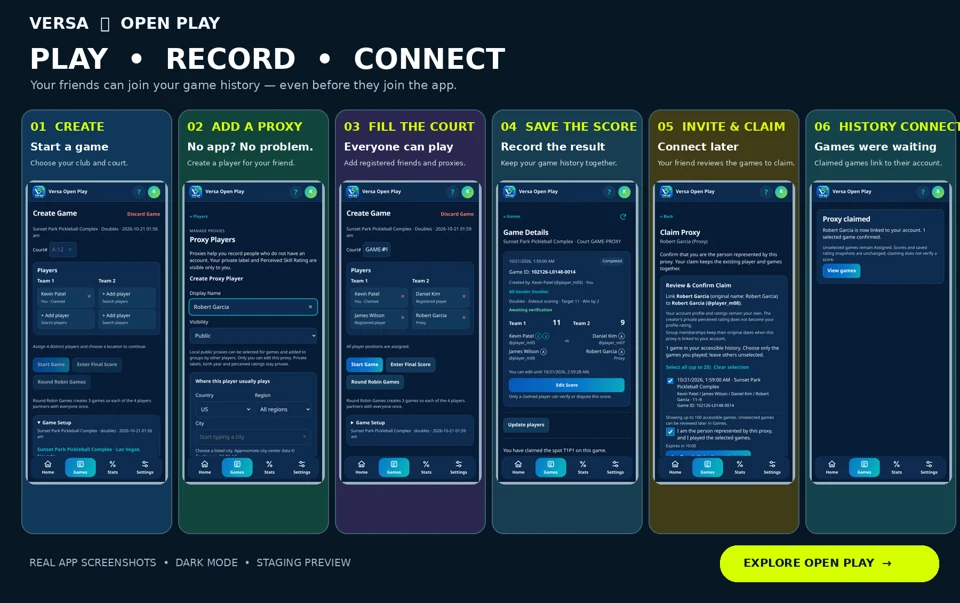

You’re an accepted member
You can access the group’s qualifying member view, subject to the screen’s history and display rules. A pending invitation or request does not grant private member access.
The player guide
Step-by-step help for players and organizers, from your first club to your next tournament.
Reviewed October 22, 2026 · Staging / tester phase. Use the app’s Help (?) for its built-in manual. Illustrated steps below use fictional examples.
01 · Get ready
Confirm your email, use a recognizable display name, choose a unique @handle and select your city from the listed results. Review your privacy and optional rating sharing.
Favorite the clubs you use most. In Profile, add Clubs I play at to help prioritize relevant players. Favorites and playing-club associations do different jobs.
Open Settings → My Preferences → Game Display. Display All Games includes saved unverified results; Only Display Fully Verified Games narrows completed history and statistics.
Choose the mode on Home beside Ready to play? The bottom navigation is Home, Games, Stats and Settings. Clubs, Groups and Proxy Players are in Settings.
You do not need a group to record a game. Your friends do not all need accounts.
02 · Find your court
The club directory is shared. Add a real place once, then everyone can use the same entry.
Search by name or city. Check existing entries before choosing + Add Location. You can also add a location from the club picker in game setup.
Enter the club name and optional street address. Choose Country, optionally narrow Region, then type at least two city letters and select a matching city. Typed text alone is not a saved city.
Choose Save location. Tap its star to favorite it. A filled yellow star means favorite; favorites sync across devices and appear first in the picker.
Illustrated walkthrough, using the app’s field labels. This is guidance, not an interactive club form.
Search for another club or change Country/Region/City where offered. Profile city helps discovery; it does not limit where you can play. International city selection does not mean every club is already listed.
Only the creator can edit or remove a club. Games or tournaments can block deletion. A creator can review a duplicate merge into the existing real club; moving tournaments also requires the relevant event permissions. Review the destination before confirming.
A favorite orders your club choices. Clubs I play at in Profile helps prioritize player choices. Neither creates membership in a player group.
03 · Bring your regulars together
A group is your player pool: your Tuesday regulars, friends from a club or a practice crew. Games are collected from membership and an inclusion rule, so you do not tag each new game with a group.
Open Settings → Groups → My Groups → + Create Group. Enter a name and description, and optionally choose a common club. The common club helps discovery; it does not restrict where the group plays.
Choose visibility, membership policy and Game Qualification. Public visibility and permission to join are separate choices. Use Check similar names, review the matches, then choose Create Group.
Open the group’s Players tab. Select available players and choose Invite / add selected. Registered friends accept their invitations. Eligible proxies can be added directly by a permitted group admin.
Illustrated group setup · Sample names. Pending invitations and requests do not count as accepted membership.
You can select up to 50 players per batch. Existing members and pending invitees cannot be selected again. Group owners and permitted admins manage members; owners can transfer ownership. Deleting a group does not delete its game records.
Choose the right inclusion rule04 · Understand your view
Group results use current accepted membership and the group’s current Game Qualification rule. Joining can bring earlier games into the group. Leaving or removal can make earlier games stop qualifying.
| Rule | A game qualifies when… | Doubles example |
|---|---|---|
| Opposing Members | Each side has at least one accepted member. | A member on Team 1 plays a member on Team 2. |
| 2+ Members Any Side | At least two participants are accepted members, on either side. | Two group friends partner against two nonmembers. |
| Members Only | Every participant is an accepted member. | All four doubles players belong to the group; both players for singles. |
Try a doubles example
Select the accepted members in this sample game. These controls only change the illustration.
This checks the membership rule only. Privacy, access, dates, verification preferences and history limits still determine what a particular viewer can see. Pending invitations count as nonmembers.
You can access the group’s qualifying member view, subject to the screen’s history and display rules. A pending invitation or request does not grant private member access.
You see the public-eligible subset. Public games must also satisfy claimed-player privacy. Public counts can therefore be lower than a member’s view.
If a member leaves, that person stops contributing to qualification. A game with one remaining member on each side still meets Opposing Members; a game with three remaining members fails Members Only. Personal game history is separate and remains subject to its own access rules.
Example: Alex + Blair vs Casey + Drew has members Alex and Casey. It meets Opposing Members. If Casey leaves and neither Blair nor Drew is a member, it no longer meets that rule. The recorded game itself is not deleted.
05 · Friends can join later
A proxy represents a real person who has not linked that identity to an account. Check local Public Proxies before making another record for the same friend.
Open Settings → Proxy Players → My Proxies → Create Proxy, or create a missing player from the game’s player chooser. Use a recognizable name and the player’s city or playing clubs. Public proxies need an area; private labels and perceived ratings stay creator-only.
Choose the proxy in game setup, alongside registered players. Your friend can play without signing in. Reuse that person’s existing proxy rather than creating a new one for every session.
Use Invite beside the proxy. Share the invitation and creator verification code only with the intended person. The claimant signs in and completes code or eligible previous-game identity proof.
The claimant confirms the identity and selects the eligible games they actually played. Claiming keeps the stable player identity and links those records; it does not verify the score. Profile ratings remain the registered player’s own.

A game invitation, QR or game code opens Game Details. It does not automatically claim a position or replace the proxy identity-proof process. Only confirm a spot and games that are yours.
06 · Keep the score
Confirm your club. Fresh setup places you in Team 1 Player 1. Choose the remaining distinct players: four for doubles, two for singles. Court number is optional.
Check the actual date/time, club, singles/doubles, scoring description and visibility. You can enter an earlier date for a game already played. A resumed setup keeps its selections.
Start Game saves an unscored game; reopen it from Home → Open Games. Enter Final Score records an already-played game. Four-player Round Robin Games creates three doubles games so everyone partners once.
In Game Details, open Share this game → Share Game / Show QR. Friends can use the link, QR or invitation code. A permanent Game ID identifies the record and is separate from its invitation code.
Open Games means “saved without a score,” not live court attendance. If a game never happened, its creator can use Game wasn’t played? Discard and confirm. A scored game cannot be discarded this way.
07 · Keep results accurate
Claim confirms who played. Verify confirms the saved score. For an ordinary Open Play result, one claimed registered player on the opposing team verifies. The submitter cannot verify their own score, and their teammate cannot verify it. If a non-playing creator submits, an eligible claimed participant on either side can review.
After one valid verification, the score is fully Verified and Verify/Dispute actions disappear. If nobody eligible has claimed, the score stays saved and unverified. Choose Display All Games if you want such completed results in your Open Play views.
The creator or a currently claimed registered participant can edit an Open Play final score during its original one-hour edit window. An edit needs new verification and does not extend the deadline. Before verification, an eligible player can dispute an incorrect score. “I did not play in this game” addresses a wrong identity association, separately from the score.
Tournament scoring has its own organizer/co-admin permissions and audited correction process. Pending tournament scores do not advance a bracket.
08 · Learn from your games
Home → Games Calendar shows game totals by day. Tap a day to open its games; use Games Calendar at the top to return to that month. The selected day opens All games for that date without inheriting unrelated filters.
Stats → My Stats shows games, wins/losses and win rate. Shared Game Summary compares your record with a partner or against an opponent. Recording a game for others does not make it your own played result.
Average point differential is your side’s score minus the opposing score, averaged over the included games. An 11–8 win is +3 and a 7–11 loss is −4: together, Avg PD is −0.5. You can win more games and still have a negative Avg PD.
Choose a club, then Singles, Doubles Individual Players or Doubles Partners. Pair results belong to that exact partnership. Open Play normally has a five-game qualification floor; a group can set its own floor. Your minimum-games filter can raise the applicable floor.
Tournament Stats is separate. Personal totals use verified games; club medal and game leaderboards compare authorized completed events. They do not inherit Open Play’s minimum-games floor. Medals appear for reviewed completed placements, not simply for organizing or watching.
Last-applied filters are remembered per signed-in account and screen on this device. Check date, club, group, division and Game Display preferences when a total looks different. Both leaderboards require one selected club; personal Stats/history can use All Locations.
09 · Make game day an event
Compare the five tournament formats in detail
Confirmed signed-in players with a completed Profile can use Tournament Mode in staging. For creation tools, enable Settings → My Preferences → Tournament Settings → Tournament Organizer. This preference is not a general administrator role.
On Tournament Home, open Organizer → Manage Tournaments → Create Tournament. Set date/location, division, format, capacity, courts, registration and visibility. Public, Group Exclusive, Unlisted link and Invite only have different access rules.
Use Event → Players → Invite Players. A registered fixed partner must accept for themselves. A shared link does not register anyone. Organizers may admit eligible guests when Allow Proxy Players is enabled.
Acceptance, identity claim and attendance are separate. Resolve eligibility and actual attendance on the event date, remove absent entries, and Finalize Roster. Admitted proxies may remain unclaimed.
Review the schedule before generating. The app warns if anyone is assigned more than six preliminary games. Enter scores from Rounds; eligible opposing players or authorized organizers/co-admins can verify.
Use Results and the format’s bracket or supported playoffs. Verified results advance competition. Final Results alone does not finish the event: an authorized director uses Review & Complete Tournament, reviews the outstanding items and confirms COMPLETE.

| Format | How it works |
|---|---|
| Round Robin / Random Draw | Fixed-team or rotating formats. Supported optional single- or double-elimination playoffs follow verified preliminary games. |
| King of the Court | Exactly eight rotating doubles players across High and Low Court. A cycle has three games per court; all six scores must be verified before movement. Optional championship round robin; no elimination playoffs. |
| Single Elimination | The main bracket is the event. Verified winners advance; byes are not played wins. |
| True Double Elimination | Winners and Losers paths meet in the final. A deciding reset is required if the undefeated finalist loses the first Grand Final. |
Group Exclusive events require current accepted group membership, apart from authorized event managers. Watching adds an accessible event to your calendar without registering you. Creating or co-administering an event does not register you either.
Manual schedule editing and explicit injury/forfeit handling remain outside the current supported flow. Do not invent scores to work around them. Use the event’s Help and contact support when a correction affects later matches.
10 · Keep it handy
Use a supported phone browser. On iPhone, look in Safari’s Share/menu for Add to Home Screen; on Android, look in Chrome’s menu for Add to Home Screen or Install app. Browser labels vary.
When An app update is ready appears, choose Later if you are busy. Save or cancel unfinished edits before Reload to update. Unsaved form edits can be lost.
Sign-in, current game data and saves need internet. Offline mode is not a downloaded private history, and score changes are not queued for later submission. Reconnect, check the latest game, then save.
11 · Choose your view
New games, groups and proxies default to Public, and new profiles use public defaults. Review your actual saved choices in Profile and Game Setup. Public game visibility still depends on claimed-player privacy; choosing Public does not override someone else’s private setting.
Display Ratings changes what you see. Share My Rating changes whether authorized viewers can see your optional profile rating. Self-rating and player-provided DUPR are informational; this is not an official ratings integration. Private proxy labels and perceived ratings stay with their creator.
Free includes today and the previous 13 calendar dates in your Profile history timezone. VOP+ provides older history you are authorized to see. On staging, Manage plan only simulates upgrading or downgrading: no payment or real subscription is created. Switching back to Free does not delete older games. Tournament access does not itself grant full history.
The testing environment may be reset, and its data will not transfer to production. Keep this in mind when trying features with your group.
12 · Need a hand?
Open Help (?) in the app header for its built-in User Guide and FAQ without leaving your current page. In Settings → Feedback & Support, submit a question or issue with a subject and message, and follow its Open/Resolved status.
Include the page, what you tried and the friendly Game ID or event name when relevant. Do not send passwords or verification codes.
Website guide reviewed against the current app manual and relevant controls on October 22, 2026. Staging screens and features can change.